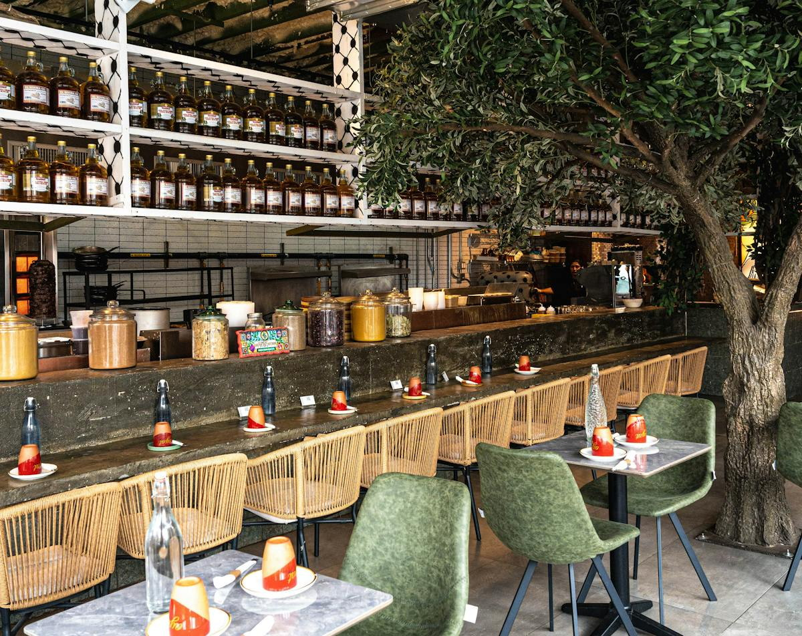

The story behind the table
Palestinian roots.
Bushwick heart.
Ayat brings Palestinian soul food to Knickerbocker Avenue—traditional favorites, generous spreads, and an open door to the neighborhood.
Founded by Abdul Elenani, Ayat’s story is shaped by Palestinian roots and a love of gathering around food. Come for a favorite, stay long enough to make the table yours.
Read Ayat’s story